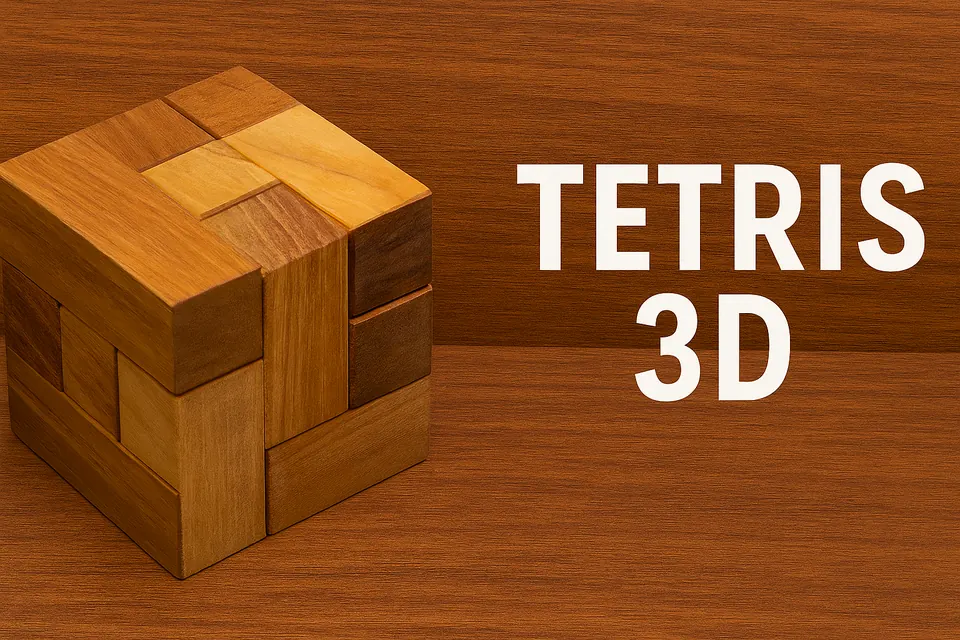

Tetris 3D — Cubo
Montagem espacial com policubos
Peças formadas por pequenos cubos devem ocupar todo o volume de um cubo maior, sem vazios nem sobreposições.

O desafio
O que observar neste jogo
Este exemplar é um quebra-cabeça físico de empacotamento. Embora o nome do acervo faça referência a Tetris, ele não reproduz as regras do videogame: aqui não há peças caindo nem eliminação de linhas.
O problema central é imaginar rotações em três dimensões e distribuir saliências e reentrâncias entre as camadas do cubo.
Guia de ação
Como experimentar
- 1
Conte o volume
Observe quantos pequenos cubos formam cada peça e estime as dimensões do cubo final.
- 2
Procure superfícies
Separe faces planas que podem compor cantos, bordas e lados externos.
- 3
Monte por camadas
Teste bases completas e verifique se elas deixam espaço possível para as peças restantes.
- 4
Revise cedo
Se surgir um vazio impossível de preencher, desfaça algumas decisões. Não espere o último encaixe para reconsiderar a base.
Possibilidades educativas
O que a atividade pode mobilizar
Rotação mental
Imaginar uma mesma peça em diferentes orientações.
Conservação de volume
Relacionar o espaço total ao volume ocupado por cada componente.
Decomposição
Transformar um problema tridimensional em camadas, cantos e subproblemas.
“Pode mobilizar” não significa “desenvolve automaticamente”. A experiência depende da proposta, da repetição, do diálogo e das condições de participação.
Mediação
Perguntas que mantêm o problema aberto
- Qual peça tem mais chance de formar um canto externo?
- O espaço restante ainda corresponde a alguma peça disponível?
- Montar por camadas ajuda ou limita suas possibilidades?
Participação e acessibilidade
Formas de adaptar sem retirar o desafio
- Marque as peças com símbolos táteis ou letras para facilitar referência verbal.
- Use um molde transparente ou uma moldura de canto para indicar o volume final.
- Reduza o desafio apresentando uma fotografia de uma camada intermediária, não da solução completa.
Referências